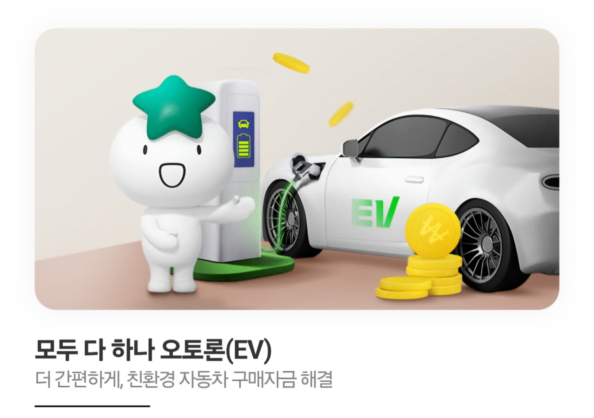
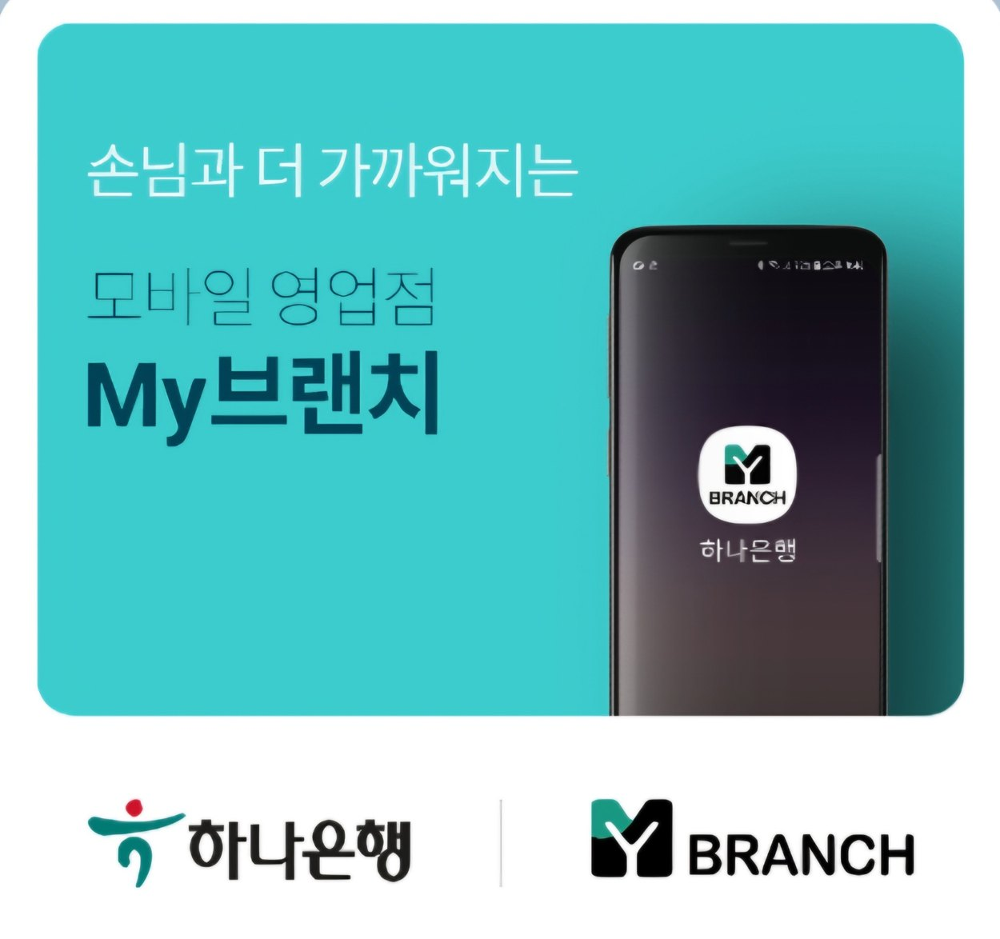

01하나은행 모두 다 하나 오토론(EV)
테슬라 120개월 할부 · 테슬라 10년 할부
테슬라 등 전기차 구매 시 은행권 자동차 금융상품을 우선 검토합니다. 1차 조회와 본 심사를 구분해 금리·월 납입금·DSR 및 실제 승인 한도와 기간을 확인합니다.
금리 · 이자 · DSR 확인최장 120개월(10년)
하나은행 EV 오토론
모델 3 · 모델 Y · 모델 Y L · 사이버트럭
계약부터 출고까지, 금리·이자·전액할부·삼성카드 캐시백을 고객 조건에 맞춰 비교하고 안내합니다.
※ 한도·금리·기간·캐시백은 개인 심사와 해당 금융사의 운영 조건에 따라 달라집니다.


자동차 금융 실무 10년 이상, 실제 진행 후기 900건 이상. 하나은행 EV 오토론의 1차 조회부터 최종 심사, 부족금 검토, 결제 및 등록 절차까지 고객 상황에 맞춰 안내합니다.
테슬라 결제 시에는 삼성카드 제휴·캐시백 조건과 은행 송금 절차를 별도로 확인합니다.
AG 천팀장에게 상담하기 ↗차량 가격과 월 상환 여력, 신용 상태, 출고 일정에 맞춰 금융 구조를 비교하는 것이 중요합니다.

01테슬라 120개월 할부 · 테슬라 10년 할부
테슬라 등 전기차 구매 시 은행권 자동차 금융상품을 우선 검토합니다. 1차 조회와 본 심사를 구분해 금리·월 납입금·DSR 및 실제 승인 한도와 기간을 확인합니다.
금리 · 이자 · DSR 확인테슬라 삼성카드 할부 조건 비교
테슬라 결제 과정에서 안내받는 삼성카드 금융조건과 은행 오토론의 월 납입금·총이자·상환방식을 비교합니다.
제휴·상품 조건 확인 필요전액할부 가능성 점검
은행 최종 승인 금액이 차량대금에 부족한 경우, 별도 금융상품 병행 가능 여부와 실행 순서를 신중하게 검토합니다.
상품별 병행 제한 확인120개월은 월 납입금 부담을 분산할 수 있지만, 동일 금리·원금 기준 짧은 기간보다 총이자가 커질 수 있습니다. 부분 중도상환이나 3~5년 후 차량 교체 시 잔여 원금 상환을 검토할 수 있으며, 수수료·약정 조건은 상품별로 다릅니다.
테슬라 결제 시 삼성카드 캐시백 적용을 희망하는 경우, 은행 오토론의 승인 금액과 결제 계좌·송금 절차를 함께 점검합니다.
일부 실제 사례에서는 삼성카드 관련 결제 계좌로 송금하기 위해 별도의 본사 승인을 받아 진행했습니다.
모델 Y L 캐시백 진행 사례 보기 ↗※ 캐시백은 상시 보장 혜택이 아닙니다. 카드사 행사, 신청 자격, 지급 방식 및 금융사 별도 승인 여부에 따라 이용이 제한될 수 있습니다.
테슬라 구매 전 카드 결제와 은행 대출을 구분해 확인하면 차량대금 결제 단계에서 혼선을 줄일 수 있습니다.
차종·옵션·최종 차량 가격을 확인한 뒤 계약금, 예상 인도 시기, 차량 잔금 결제 일정과 필요 서류를 점검합니다. 계약금과 잔금의 결제 수단은 서로 다를 수 있습니다.
테슬라 삼성카드 할부를 비롯해 실제 이용 가능한 카드사 제휴, 카드 한도, 결제 방식 및 행사 조건은 구매 시점에 확인해야 합니다. 하나카드 AUTO할부를 테슬라 결제 가능 상품으로 안내하지 않습니다.
테슬라 120개월 할부 또는 테슬라 10년 할부를 검토할 때 적용 금리와 월 납입금뿐 아니라 총이자, DSR, 중도상환 조건을 함께 비교합니다. 실제 승인 기간과 한도는 심사 결과에 따릅니다.
테슬라 모델 Y·모델 3 구매 시 자주 확인하는 금융조건을 먼저 간단히 정리했습니다. 실제 이용 조건은 금융회사 심사 및 구매 시점에 따라 달라집니다.
금리는 모든 고객에게 동일하지 않습니다. 적용 금리, 기간, 대출금액과 상환 방식에 따라 월 납입금과 총이자가 달라집니다. 실제 금리와 중도상환 조건은 최종 약정 전 확인해야 합니다.
전액할부는 개별 심사와 결제 구조에 따라 가능 여부가 달라집니다. 하나은행 EV 오토론 1차 조회는 참고 결과이며 최종 승인액과 실제 실행액은 다를 수 있습니다. 부족금 병행은 별도 심사와 제한을 확인합니다.
120개월은 상품상 검토 가능한 최장 기간이며 확정 조건이 아닙니다. 소득·부채·DSR 등 심사 조건을 확인해야 하며, 같은 금리와 원금이라면 상환기간이 길수록 일반적으로 총이자가 증가합니다.
테슬라 차량할부를 알아볼 때는 광고에 표시된 금리만 보지 말고 실제 승인 조건과 전체 상환 부담을 함께 확인해야 합니다.
테슬라 할부 금리 비교 시에는 동일한 차량대금, 선수금, 상환 기간을 기준으로 월 납입금과 총이자를 함께 살펴보세요. 실제 적용 금리는 금융상품과 개인별 심사 결과에 따라 달라집니다.
테슬라 저금리 할부를 찾는 경우에도 특정 상품이 항상 가장 저렴하다고 단정하지 않고, 승인 금리·우대 조건·중도상환 비용을 비교해야 합니다.
테슬라 할부 한도는 차량 가격만으로 결정되지 않습니다. 금융상품별 한도와 신용·소득·기존 부채·DSR 등 심사 조건을 확인해야 합니다. 1차 조회 한도와 최종 승인 한도도 다를 수 있습니다.
테슬라 월 납입금은 실제 이용 원금, 적용 금리, 상환 기간 및 상환 방식에 따라 달라지므로 최종 승인 조건을 기준으로 산출해야 합니다.
테슬라 할부 프로그램을 비교할 때 하나은행 EV 오토론과 테슬라 구매 시 안내되는 삼성카드 제휴 금융·결제 조건을 구분해야 합니다. 각 상품의 취급 여부, 상환 기간, 결제 방식은 확인이 필요합니다.
테슬라 할부 DSR 영향은 대출 여부와 개인별 부채·소득 조건에 따라 검토해야 합니다. 전액할부나 120개월 이용 가능 여부도 최종 심사와 상품 약정에 따릅니다.
테슬라 할부 상담은 차량 모델, 예상 출고 시기, 차량 가격, 선수금과 희망 할부 금액을 기준으로 진행합니다. 실제 승인이나 저금리를 보장하지 않습니다.
차량별 가격과 구매 일정에 따라 필요한 할부 금액이 달라집니다. 국내 주문·인도 및 금융 취급 가능 여부는 상담 시 확인합니다.
전기 세단
금리 · 이자 · 전액할부 · 120개월모델 3 할부 상담 ↗전기 SUV
금리 · 이율 · 선수금 · 120개월모델 Y 실제 사례 ↗확장형 전기 SUV
전액할부 · 캐시백 · 부족금 설계모델 Y L 실제 사례 ↗전기 픽업트럭
국내 구매·등록·금융조건 별도 확인사이버트럭 상담 ↗모델 S·모델 X 등 기타 차종은 신규 주문 및 국내 취급 상황을 확인한 뒤 상담을 안내합니다.
한도 조회 전에 상환 계획부터 확인하고, 최종 심사 이후의 부족금과 월 부담까지 함께 살펴봅니다.
신용점수·소득·기대출·DSR·차량가격·희망 할부금액을 확인해 불필요한 조회를 줄이고 가능한 진행 방향을 안내합니다.
1차 한도는 참고값으로 보고, 소득증빙과 금융사 심사를 통해 최종 승인 금액과 이용 조건을 확인합니다.
은행 한도가 부족하면 상품별 병행 제한과 실행 순서를 검토합니다. 어려운 경우 선수금이나 차량 구매예산 조정도 안내합니다.
기존 대출 부담과 총이자, 향후 금융계획을 함께 고려해 무리 없이 상환할 수 있는 구조를 검토합니다.
실제 금융조건과 금융사 심사기준에 맞춰 가능한 대안을 검토합니다.
NICE·KCB 점수와 소득·기대출을 함께 살핍니다. 약 750점은 1차 참고 구간, 800점 이상은 상대적으로 유리한 상담 참고 구간으로 활용하며 은행의 공식 승인 기준은 아닙니다.
확인 가능한 부결 사유, 소득증빙, 기존 채무와 상환 부담을 검토합니다. 규제 우회가 아닌 실제 조건 개선 및 재심사 가능성을 안내합니다.
필요한 경우 실제 금융계약자와 차량 소유관계가 약정·등록 기준에 부합하는지 확인하며, 단순 명의대여 방식은 안내하지 않습니다.
금융 실행·차량대금 송금 후 카매니저가 진행한 차량 등록 결과와 공동명의 지분 등이 승인 조건과 일치하는지 확인합니다.
※ 승인 여부·한도·기간은 금융사 심사에 따르며, 신용조건 보완이나 가족명의 검토가 승인을 보장하지 않습니다. 테슬라에서는 하나카드 AUTO할부를 이용 가능한 상품으로 안내하지 않습니다.
블로그에 게시된 실제 상담·진행 내용을 요약했습니다. 아래 금액은 개별 사례이며 동일한 승인을 보장하지 않습니다.
차량 가격 6,467만원. EV 오토론 4,700만원과 플랜B 1,767만원을 사례에 기재했으며, 캐시백 관련 별도 승인 절차도 확인했습니다. 계약금 500만원의 정산 관계는 별도 확인이 필요합니다.
실제 후기 원문 보기 ↗본 심사에서 승인 가능 금액이 400만원 증가했습니다. 남은 664만원은 플랜B 금융 구조를 비교·검토한 사례입니다.
실제 후기 원문 보기 ↗필요 할부금 4,759만원 중 EV 오토론 4,400만원을 120개월로 진행하고, 차량 잔금 339만원과 탁송료 20만원은 현금으로 준비했습니다.
실제 후기 원문 보기 ↗하나은행 1Q 오토론 4,300만원을 120개월로 진행하고 부족한 568만원을 플랜B로 보완한 사례입니다.
실제 후기 원문 보기 ↗AG 천팀장의 자동차 금융 진행 사례와 최신 상담 정보를 확인하세요. 최근 게시글 6개를 발행일 순으로 통합해 보여드립니다.

간편 조회부터 최종 심사까지, 실제 진행 경험을 바탕으로 상담합니다.
금융 안내 이미지이며 아래 최신 블로그 후기는 별도로 표시됩니다.실제 상담 전 많이 확인하시는 내용을 정리했습니다.
하나은행 EV 오토론은 상품 조건에 따라 최장 120개월을 검토할 수 있습니다. 실제 가능 여부와 기간·금리·한도는 소득, 신용, DSR 및 최종 심사 결과에 따라 달라집니다.
테슬라의 카드사 제휴 및 결제 방식에는 제한이 있을 수 있습니다. 계약금 결제와 차량 잔금 결제는 조건이 다를 수 있으므로, 구매 시점의 테슬라 공식 안내를 확인해야 합니다. 하나카드 AUTO할부를 테슬라 결제 가능 상품으로 안내하지 않습니다.
아닙니다. 1차 조회는 참고 결과이며, 본 심사에서 소득증빙·재직·DSR·기존 부채 등을 확인한 후 승인 금액이 늘거나 줄거나 부결될 수 있습니다.
부족금에 대해 플랜B를 검토할 수 있지만, 상품 간 병행 가능 여부와 실행 순서, 최종 심사 조건에 따라 달라집니다. 모든 고객에게 전액할부가 가능한 것은 아닙니다.
아닙니다. 캐시백 행사 운영 여부, 카드사 신청 조건, 결제 계좌, 은행 측 별도 승인 등에 따라 적용 가능 여부가 달라집니다. 신청 및 송금 전에 해당 시점 조건을 확인해야 합니다.
카드 할부와 은행 오토론은 금융상품 유형, 승인 조건, 상환 기간과 결제 절차가 다릅니다. 삼성카드의 테슬라 제휴 할부 조건과 하나은행 EV 오토론의 최장 120개월 조건을 각 금융사의 현재 안내에 따라 비교해야 합니다.
차량 계약금과 잔금의 결제 수단이 다를 수 있으므로 테슬라의 현재 공식 결제 안내와 카드사 제휴·할부 조건을 확인하세요. 삼성카드 제휴 여부, 결제 가능 범위, 한도 및 캐시백은 계약·결제 시점에 따라 달라질 수 있습니다.
차량과 옵션을 선택하고 계약금 및 인도 일정을 확인한 뒤, 예상 잔금에 맞춰 1차 조회·최종 심사·금융 약정·차량대금 결제·등록 순으로 진행 여부를 검토합니다. 실제 실행 순서는 판매사와 금융사 안내에 따릅니다.
상품 유형, 신용도, 소득, 기존 부채, DSR, 상환 기간 및 금융사 심사에 따라 달라집니다. 금리뿐 아니라 총이자, 월 납입금, 중도상환수수료를 함께 비교하는 것이 좋습니다.
같은 원금과 금리, 일반적인 원리금균등상환을 가정하면 상환 기간이 길수록 총이자가 늘어납니다. 부분 중도상환이나 차량 교체 시 잔여 원금 상환 계획도 함께 고려하되, 중도상환수수료와 약정 조건을 확인해야 합니다.
차량 모델·예상 가격·필요 할부금·출고 예정일을 알려주시면 현재 조건에 맞는 검토 방향을 안내합니다.